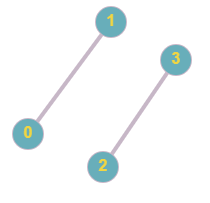
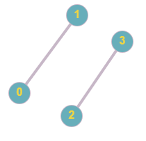

В математической теории графов и информатике граф —
это совокупность
непустого множества вершин и множества пар вершин (связей между
вершинами)

Ориентированный граф (кратко орграф) — (мульти) граф, рёбрам
которого присвоено направление. Направленные рёбра именуются также
дугами, а в некоторых источниках (Оре) и просто рёбрами.

Неориентированным графом называется множество как угодно размещенных на
плоскости, точек, некоторые из которых соединены линиями любой формы.

Связный граф — граф, содержащий ровно одну компоненту
связности. Это означает, что между любой парой вершин этого графа
существует как минимум один путь. В противном случае граф
будет называться несвязным.
связный: несвязный:
 ;
;
.
Степень вершины в теории графов — количество рёбер
графа ,
инцидентных вершине . При подсчёте степени ребро-петля учитывается
дважды.[1] Степень вершины обозначается(в западных источниках
—
\deg(v)). Максимальная и минимальная степень вершин графа G
обозначаются соответственно Δ(G) и δ(G). На рис. 1
максимальная степень равна 5, минимальная — 0. В регулярном
графе
степени всех вершин одинаковы, поэтому в данном случае можно говорить о
степени графа.

Дерево [tree] — в теории графов, связный граф без циклов,
обладающий следующими основными свойствами (которые математически
эквивалентны): если за n принять число вершин (элементов
графа),
то он содержит ровно n — 1 ребро, не имеет циклов; если
добавить
ребро, соединяющее две несмежные вершины, то образуется один цикл; при
удалении любого ребра граф становится несвязным; каждая пара вершин
соединяется одной и только одной цепью. Исходная вершина называется
корнем, пути от нее к крайним вершинам — ветвями. Примеры см.
в
статьях: Дерево игры, Дерево решений, Дерево целей.

Изоморфные графы – существует взаимно однозначное
соответствие
между множествами их вершин или биекция, сохраняющая отношение
смежности.

Эйлеровым циклом в графе называется такой цикл, который содержит все
ребра и все вершины этого графа. Напомним, что, по определению, в
циклах не повторяются ребра. Таким образом, при наличии эйлерова цикла
в графе этот граф можно обойти по всем ребрам, пройдя каждое ребро
только один раз. Граф, обладающий эйлеровым циклом, сам называется
Эйлеровым.
Эйлеровой цепью в неориентированном графе G называется простая цепь,
содержащая все ребра графа G. Эйлеровым циклом называется замкнутая
Эйлерова цепь. Аналогично, эйлеров путь в орграфе G — это
простой путь, содержащий все дуги графа G.
Гамильтонов цикл - это простой цикл, содержащий все вершины графа. ...
Граф называется гамильтоновым, если в нем имеется гамильтонов цикл.
ГАМИЛЬТОНОВА ЦЕПЬ. — цепь графа, содержащая все вершины графа
и проходящая через каждую из них один и только один раз.
Алгоритм
Дейкстры — алгоритм на графах, изобретённый нидерландским
ученым Э. Дейкстрой в 1959 году. Находит кратчайшее расстояние от одной
из вершин графа до всех остальных. Работает только для графов без рёбер
отрицательного веса.